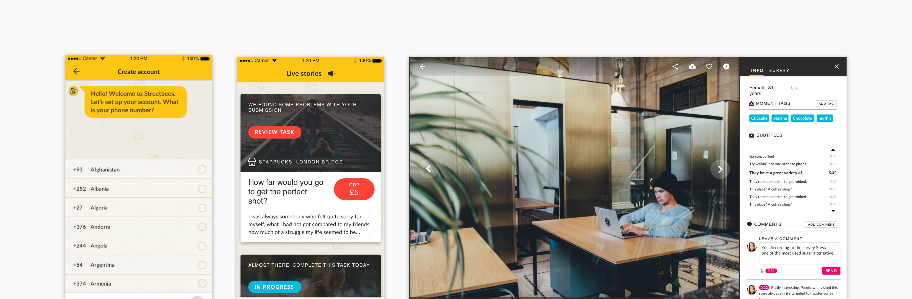

Working with data

Our objective on this project was to engage users to take part in surveys so we could collect data. We then translated that data into dashboards, working closely with the data team (as they were the users of the product).
If you would like to see more of this project and process, get in touch.